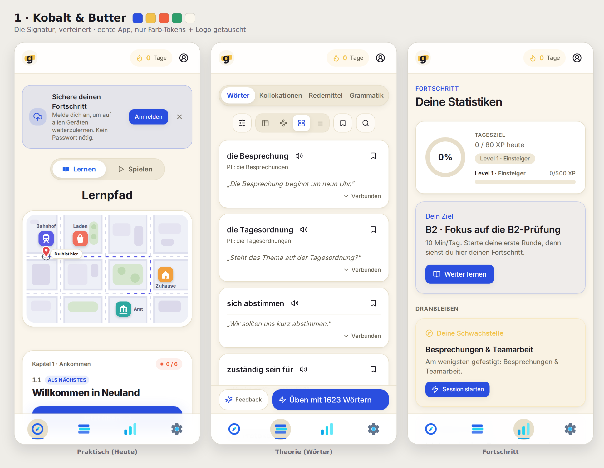
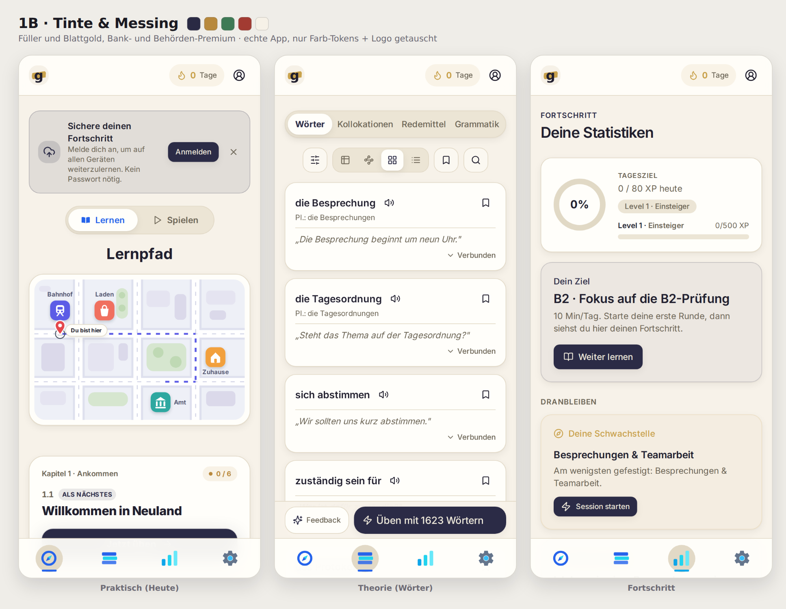
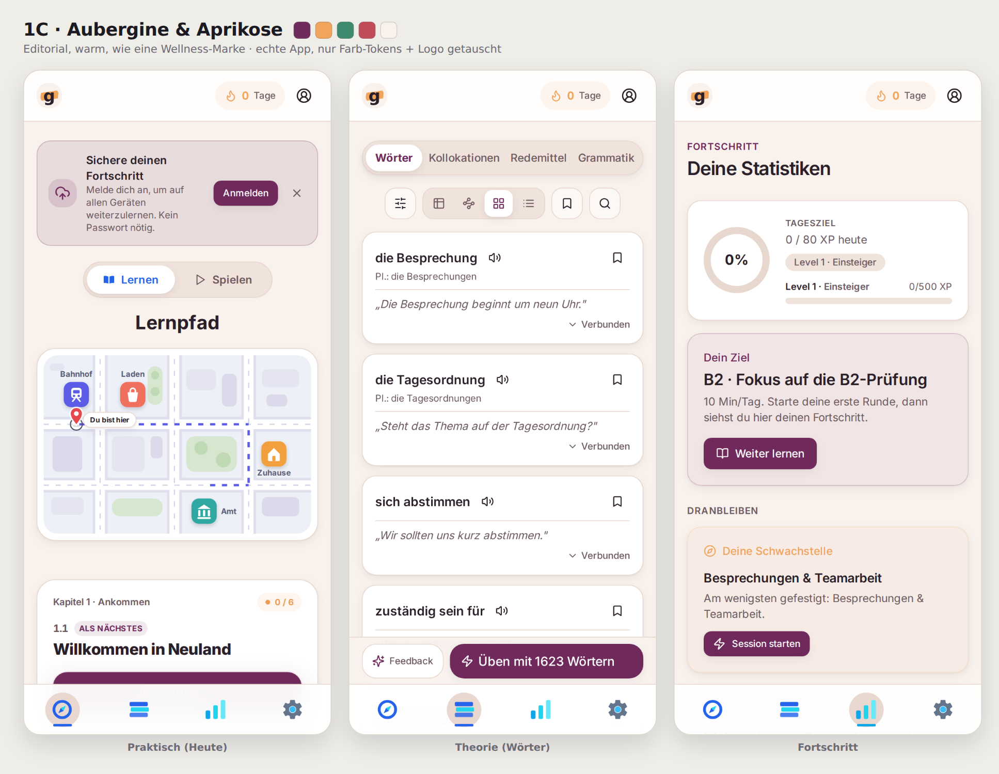
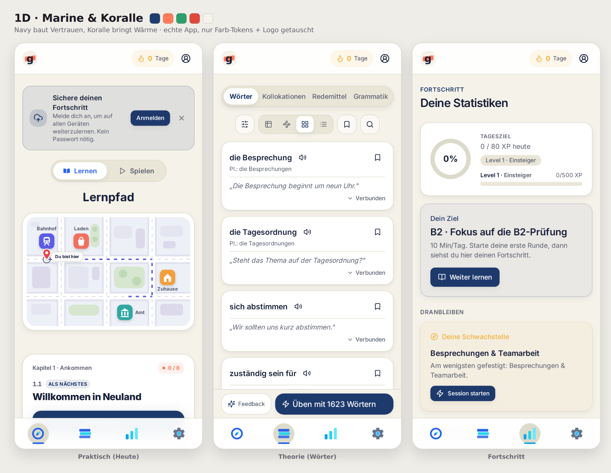
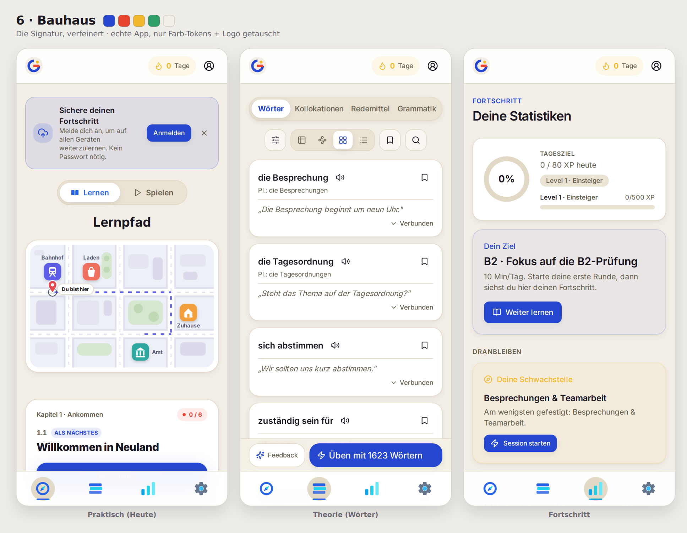
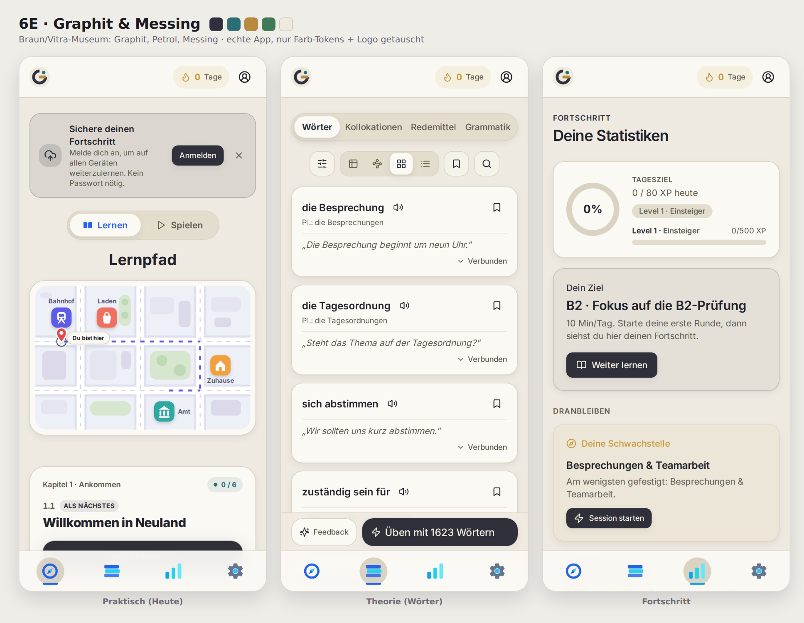
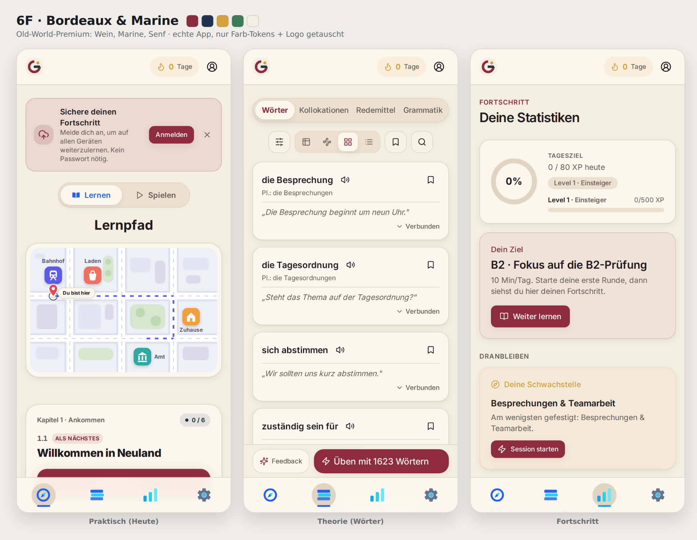
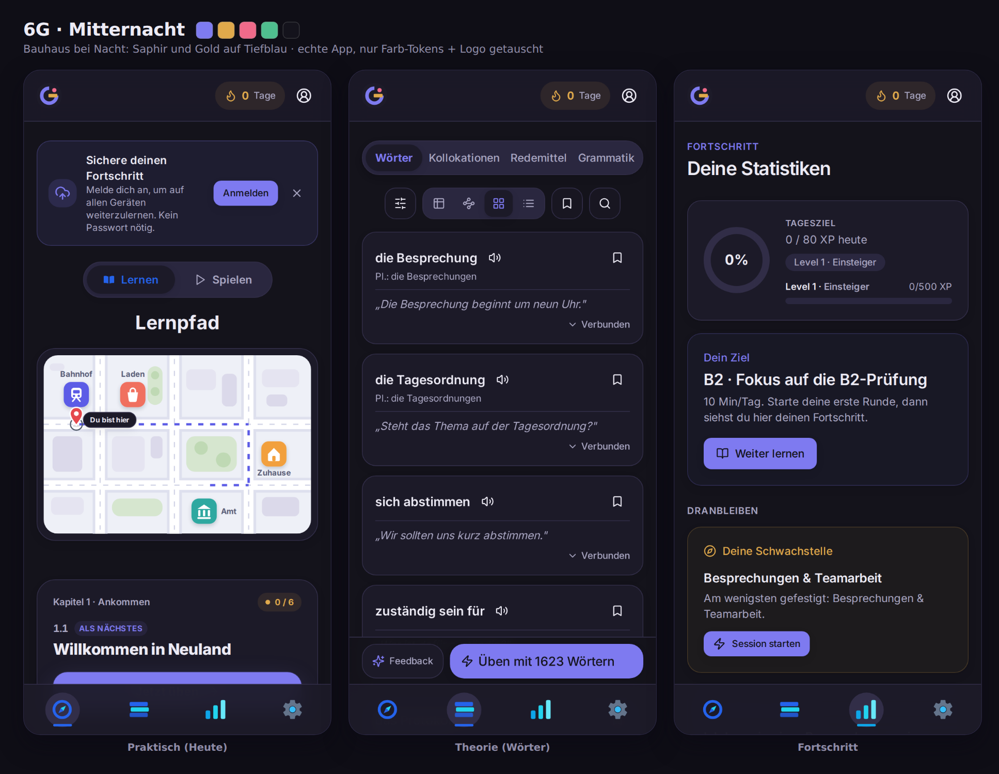
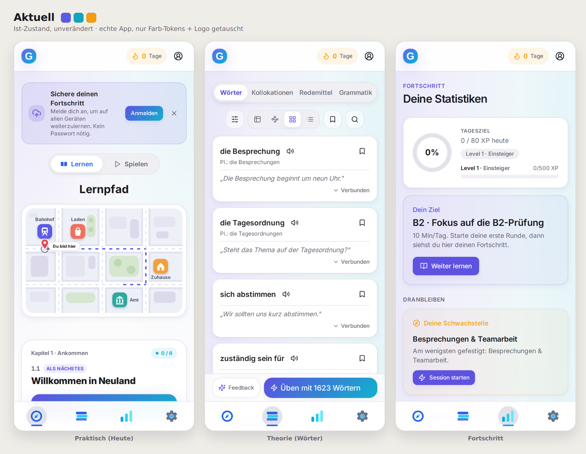

<!-- Genauly Markenkatalog Vol. VI (session 127 cont.) — premium color variations of Kit 1 + Kit 6. -->
<meta charset="utf-8">
<meta name="viewport" content="width=device-width, initial-scale=1">
<title>Genauly Markenkatalog · Vol. VI · Premium-Varianten</title>
<link rel="preconnect" href="https://fonts.googleapis.com">
<link rel="preconnect" href="https://fonts.gstatic.com" crossorigin>
<link rel="stylesheet" href="https://fonts.googleapis.com/css2?family=Fraunces:opsz,wght@9..144,400;9..144,500;9..144,600&family=Inter:wght@400;500;600;700;800&display=swap">
<style>
  :root { --page:#F3F0E9; --ink:#1C1A20; --mut:#6C6A72; --line:#E1DCCF; --card:#FBF9F4;
          --ui:"Inter",system-ui,sans-serif; --disp:"Fraunces",Georgia,serif; }
  @media (prefers-color-scheme:dark){ :root{ --page:#131218; --ink:#ECEAF2; --mut:#9997A6; --line:#2A2836; --card:#1A1922; } }
  :root[data-theme="light"]{ --page:#F3F0E9; --ink:#1C1A20; --mut:#6C6A72; --line:#E1DCCF; --card:#FBF9F4; }
  :root[data-theme="dark"]{ --page:#131218; --ink:#ECEAF2; --mut:#9997A6; --line:#2A2836; --card:#1A1922; }
  * { box-sizing:border-box; margin:0; padding:0; }
  html { scroll-behavior:smooth; }
  body { background:var(--page); color:var(--ink); font-family:var(--ui); line-height:1.55; }
  .wrap { max-width:1120px; margin:0 auto; padding:0 26px; }
  .intro { padding:74px 0 40px; }
  .intro .eyebrow { font-size:12px; font-weight:700; letter-spacing:.16em; text-transform:uppercase; color:var(--mut); }
  .intro h1 { font-family:var(--disp); font-size:clamp(32px,5.4vw,52px); font-weight:500; letter-spacing:-.01em; margin:14px 0 16px; text-wrap:balance; line-height:1.08; }
  .intro p { max-width:64ch; font-size:16px; color:var(--ink); opacity:.82; }
  .intro p + p { margin-top:10px; }
  .brief { display:flex; flex-wrap:wrap; gap:8px; margin-top:24px; }
  .brief span { font-size:13px; font-weight:600; background:var(--card); border:1.5px solid var(--line); border-radius:999px; padding:6px 15px; }
  .fam { padding:44px 0 12px; }
  .fam .eyebrow { font-size:12px; font-weight:700; letter-spacing:.16em; text-transform:uppercase; color:var(--mut); }
  .fam h2 { font-family:var(--disp); font-size:clamp(26px,3.8vw,38px); font-weight:500; margin:8px 0 10px; }
  .fam .blurb { max-width:70ch; font-size:15.5px; opacity:.82; margin-bottom:26px; }
  .kit { background:var(--card); border:1.5px solid var(--line); border-radius:22px; padding:24px; margin-bottom:22px; }
  .kit.dark { background:#0F0E16; border-color:#2A2740; color:#ECEAF2; }
  .kithead { display:flex; align-items:center; gap:16px; margin-bottom:16px; }
  .kithead .mk { width:58px; height:58px; border-radius:15px; flex:none; box-shadow:0 4px 14px rgba(20,16,30,.14); }
  .kithead h3 { font-family:var(--disp); font-size:23px; font-weight:600; letter-spacing:-.005em; }
  .kithead .tag { font-size:14px; opacity:.7; margin-top:2px; }
  .pal { display:flex; flex-wrap:wrap; gap:10px; margin-bottom:20px; }
  .sw { display:flex; align-items:center; gap:8px; }
  .sw .chip { width:26px; height:26px; border-radius:7px; display:block; border:1px solid rgba(128,128,128,.28); }
  .sw .hx { font-size:11.5px; font-weight:600; opacity:.62; font-variant-numeric:tabular-nums; letter-spacing:.02em; }
  .shot img { width:100%; height:auto; display:block; border-radius:14px; }
  .outro { padding:40px 0 84px; }
  .outro h2 { font-family:var(--disp); font-size:26px; font-weight:600; margin-bottom:10px; }
  .outro p { max-width:66ch; opacity:.82; }
  .outro p + p { margin-top:10px; }
  code { font-family:ui-monospace,SFMono-Regular,Menlo,monospace; font-size:.92em; background:rgba(128,128,128,.14); padding:1px 5px; border-radius:5px; }
</style>

<header class="intro"><div class="wrap">
  <p class="eyebrow">Genauly · Markenkatalog · Vol. VI</p>
  <h1>Premium-Varianten: Kit 1 und Kit 6, tiefer und edler</h1>
  <p>Du willst dich auf die zwei Favoriten konzentrieren, mit dem Ziel: eine visuell herausragende App, die Vertrauen schafft und sich hochwertig anfühlt. Also bleibt die Kernidee jedes Zeichens unangetastet, und die Farbe wird zum Werkzeug: weg von Bonbon, hin zu satten, gesetzten Tönen und warmen, gewählten Neutraltönen.</p>
  <p>Alle Screens sind die <b>echte App</b>, nur Farb-Tokens und Header-Logo getauscht (Verläufe abgeflacht). Ganz unten steht der Ist-Zustand als Referenz.</p>
  <div class="brief"><span>Kernidee bleibt</span><span>tiefe, edle Farben</span><span>Vertrauen &amp; Hochwertigkeit</span><span>inkl. Dunkelvariante</span></div>
</div></header>

<section class="fam"><div class="wrap">
      <p class="eyebrow">Kit 1 · Familie</p>
      <h2>Textmarker</h2>
      <p class="blurb">Der Textmarker bleibt das Herz: das kleine <b>g</b> sitzt auf einem Leuchtstift-Swipe, in <b>genauly</b> steckt <b>genau</b>. Was sich ändert, ist die Stimmung der Farbe, von hell und freundlich bis Füller-und-Blattgold.</p>
      <article class="kit">
    <div class="kithead">
      
      <div><h3>1 · Kobalt & Butter</h3><p class="tag">Die Signatur, verfeinert</p></div>
    </div>
    <div class="pal"><div class="sw"><span class="chip" style="background:#2B4FE0"></span><span class="hx">#2B4FE0</span></div><div class="sw"><span class="chip" style="background:#F3C24B"></span><span class="hx">#F3C24B</span></div><div class="sw"><span class="chip" style="background:#F0603F"></span><span class="hx">#F0603F</span></div><div class="sw"><span class="chip" style="background:#2E9E6B"></span><span class="hx">#2E9E6B</span></div><div class="sw"><span class="chip" style="background:#FAF6EC"></span><span class="hx">#FAF6EC</span></div></div>
    <div class="shot"></div>
  </article>
<article class="kit">
    <div class="kithead">
      
      <div><h3>1B · Tinte & Messing</h3><p class="tag">Füller und Blattgold, Bank- und Behörden-Premium</p></div>
    </div>
    <div class="pal"><div class="sw"><span class="chip" style="background:#2A2A44"></span><span class="hx">#2A2A44</span></div><div class="sw"><span class="chip" style="background:#B8893C"></span><span class="hx">#B8893C</span></div><div class="sw"><span class="chip" style="background:#3E7A55"></span><span class="hx">#3E7A55</span></div><div class="sw"><span class="chip" style="background:#A23B32"></span><span class="hx">#A23B32</span></div><div class="sw"><span class="chip" style="background:#F6F1E7"></span><span class="hx">#F6F1E7</span></div></div>
    <div class="shot"></div>
  </article>
<article class="kit">
    <div class="kithead">
      
      <div><h3>1C · Aubergine & Aprikose</h3><p class="tag">Editorial, warm, wie eine Wellness-Marke</p></div>
    </div>
    <div class="pal"><div class="sw"><span class="chip" style="background:#6E2A5B"></span><span class="hx">#6E2A5B</span></div><div class="sw"><span class="chip" style="background:#F0A45C"></span><span class="hx">#F0A45C</span></div><div class="sw"><span class="chip" style="background:#3E8A6E"></span><span class="hx">#3E8A6E</span></div><div class="sw"><span class="chip" style="background:#C24B5A"></span><span class="hx">#C24B5A</span></div><div class="sw"><span class="chip" style="background:#F8F1EC"></span><span class="hx">#F8F1EC</span></div></div>
    <div class="shot"></div>
  </article>
<article class="kit">
    <div class="kithead">
      
      <div><h3>1D · Marine & Koralle</h3><p class="tag">Navy baut Vertrauen, Koralle bringt Wärme</p></div>
    </div>
    <div class="pal"><div class="sw"><span class="chip" style="background:#1E3C6E"></span><span class="hx">#1E3C6E</span></div><div class="sw"><span class="chip" style="background:#FF7A59"></span><span class="hx">#FF7A59</span></div><div class="sw"><span class="chip" style="background:#2E9E6B"></span><span class="hx">#2E9E6B</span></div><div class="sw"><span class="chip" style="background:#E0483C"></span><span class="hx">#E0483C</span></div><div class="sw"><span class="chip" style="background:#F5F2EA"></span><span class="hx">#F5F2EA</span></div></div>
    <div class="shot"></div>
  </article>
    </div></section>
<section class="fam"><div class="wrap">
      <p class="eyebrow">Kit 6 · Familie</p>
      <h2>Bauhaus</h2>
      <p class="blurb">Das Zeichen bleibt die gebaute Form: ein <b>G</b> aus Kreis, Balken und Punkt. Die Palette wandert vom klaren Primärfarben-Bauhaus ins Museumshafte, ins Old-World-Weinrot und in die Nacht.</p>
      <article class="kit">
    <div class="kithead">
      
      <div><h3>6 · Bauhaus</h3><p class="tag">Die Signatur, verfeinert</p></div>
    </div>
    <div class="pal"><div class="sw"><span class="chip" style="background:#2547D0"></span><span class="hx">#2547D0</span></div><div class="sw"><span class="chip" style="background:#E8442E"></span><span class="hx">#E8442E</span></div><div class="sw"><span class="chip" style="background:#F2B92E"></span><span class="hx">#F2B92E</span></div><div class="sw"><span class="chip" style="background:#2F9E68"></span><span class="hx">#2F9E68</span></div><div class="sw"><span class="chip" style="background:#F4EFE6"></span><span class="hx">#F4EFE6</span></div></div>
    <div class="shot"></div>
  </article>
<article class="kit">
    <div class="kithead">
      
      <div><h3>6E · Graphit & Messing</h3><p class="tag">Braun/Vitra-Museum: Graphit, Petrol, Messing</p></div>
    </div>
    <div class="pal"><div class="sw"><span class="chip" style="background:#30303C"></span><span class="hx">#30303C</span></div><div class="sw"><span class="chip" style="background:#2C6E75"></span><span class="hx">#2C6E75</span></div><div class="sw"><span class="chip" style="background:#B98A3C"></span><span class="hx">#B98A3C</span></div><div class="sw"><span class="chip" style="background:#3E7A55"></span><span class="hx">#3E7A55</span></div><div class="sw"><span class="chip" style="background:#EFEAE0"></span><span class="hx">#EFEAE0</span></div></div>
    <div class="shot"></div>
  </article>
<article class="kit">
    <div class="kithead">
      
      <div><h3>6F · Bordeaux & Marine</h3><p class="tag">Old-World-Premium: Wein, Marine, Senf</p></div>
    </div>
    <div class="pal"><div class="sw"><span class="chip" style="background:#8A2C3B"></span><span class="hx">#8A2C3B</span></div><div class="sw"><span class="chip" style="background:#21324F"></span><span class="hx">#21324F</span></div><div class="sw"><span class="chip" style="background:#D6A13C"></span><span class="hx">#D6A13C</span></div><div class="sw"><span class="chip" style="background:#3E7A55"></span><span class="hx">#3E7A55</span></div><div class="sw"><span class="chip" style="background:#F4EEE2"></span><span class="hx">#F4EEE2</span></div></div>
    <div class="shot"></div>
  </article>
<article class="kit dark">
    <div class="kithead">
      
      <div><h3>6G · Mitternacht</h3><p class="tag">Bauhaus bei Nacht: Saphir und Gold auf Tiefblau</p></div>
    </div>
    <div class="pal"><div class="sw"><span class="chip" style="background:#7E7BF0"></span><span class="hx">#7E7BF0</span></div><div class="sw"><span class="chip" style="background:#E0A94B"></span><span class="hx">#E0A94B</span></div><div class="sw"><span class="chip" style="background:#F06A8A"></span><span class="hx">#F06A8A</span></div><div class="sw"><span class="chip" style="background:#4FBF8F"></span><span class="hx">#4FBF8F</span></div><div class="sw"><span class="chip" style="background:#14131C"></span><span class="hx">#14131C</span></div></div>
    <div class="shot"></div>
  </article>
    </div></section>

<section class="fam"><div class="wrap">
  <p class="eyebrow">Referenz</p>
  <h2>Aktueller Zustand</h2>
  <p class="blurb">Zum Vergleich, ohne jeden Eingriff.</p>
  <article class="kit">
    <div class="kithead">
      
      <div><h3>Aktuell</h3><p class="tag">Ist-Zustand, unverändert</p></div>
    </div>
    <div class="pal"><div class="sw"><span class="chip" style="background:#5B5BE6"></span><span class="hx">#5B5BE6</span></div><div class="sw"><span class="chip" style="background:#12A5BC"></span><span class="hx">#12A5BC</span></div><div class="sw"><span class="chip" style="background:#F59E0B"></span><span class="hx">#F59E0B</span></div></div>
    <div class="shot"></div>
  </article>
</div></section>

<footer class="outro"><div class="wrap">
  <h2>Nächster Schritt</h2>
  <p>Sag mir den Favoriten (oder eine Mischung, z. B. das Kit-1-Zeichen mit der Mitternacht-Palette). Premium heißt Konsequenz: Ich verdrahte dann die Tokens hell <b>und</b> dunkel, ziehe die Nav-Marken-Farben aus <code>route-icons.tsx</code> nach (die sind fest kodiert, nicht getokent), erzeuge Logo, Favicons und PWA-Icons neu und liefere alles per PR nach <code>main</code>.</p>
  <p>Diese Vorschau ist derselbe Mechanismus wie der echte Umbau (die Tokens in <code>src/index.css</code>), das Ergebnis sieht also genauso aus.</p>
</div></footer>